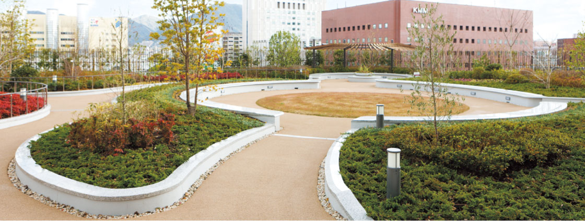

お見舞い・付き添い
Visit somebody in hospital

面会時のお願い ※2024年4月1日時点
- ・面会は患者さんのご家族に限定させていただいています。
- ・面会人数2名までとし、小学生以下はご遠慮ください。
- ・病院内ではサージカルマスク（不織布）を着用してください。
- （マスクの無い方は面会をお断りさせていただきます）
- ・手指消毒を行ってください。
面会時間
集中治療室（lCU・CCU・SCU・HCU）では別に定められた面会時間がありますので、看護師の指示に従ってください。また、患者さんの病状によっては、面会をお断りすることがありますのでご了承ください。
入館許可証について
休診日（土日祝日）の面会は、入院患者さんの安静確保と防犯の観点より、当院では入院病棟への入館を希望される方へ入館許可証を発行しています。入院病棟への入館を希望される方は1階保安室にてお手続きをお願い致します。
付き添いについて
入院中の看護は、看護師がいたします。ただし、患者さんの病状等で、ご家族の希望があり、医師が必要と認めた場合に限り、ご家族の付添いが認められます。なお、付き添いの方の貸し出し寝具はスタッフステーションまでお申し込みください。費用はパイプ枕・肌ふとんセットで1日〜7日まで500円、パイプ枕・肌ふとん・敷ふとんセットで1日〜7日まで1,000円（一般病棟ではシングルカウチベットが付きます）となっております。
入院中の患者さんへのご連絡
電話／入院中の患者さんへの電話は、緊急時以外はご遠慮ください。
郵便物／患者さん宛に郵便物を発送する際は、診療科名、病室番号をご明記ください。
【感染対策のお願い】
当院には、感染すると重症化しやすい状態の患者さんが入院されていますので、上記感染対策の徹底をお願いします。
また、下記の方はご面会をお断りしています。皆さまには大変ご不便をおかけしますが、何卒ご理解ご協力のほどお願いいたします。
＜面会をお断りしている方＞
- ■ 発熱や咳などの症状のある方、嘔吐・下痢など体調がすぐれない方
- ■ 12歳以下のお子さま